画路、配信号、配车流
v1.0.0
| 只用基础版 画路 → 配信号 → 导出给游戏 |
1234567 看完就能画出一张能导出、能进游戏的关卡。第 8 章以后不用看。 |
| 要跑 SUMO 仿真 专业版：逐灯位配时 / 车流车型 / 一键试跑 |
12345678910 前 7 章是基础，必须看；专业模式的部分是第 8~10 章。 |
| 只想搞懂「一张关卡该有什么」 策划 / 设计视角，不碰软件 |
附录 A （关卡组成、评分、事件） |
把压缩包解压到任意文件夹，里面是这样：
路网编辑器\ ├─ 信号规划师 · 地图编辑器.exe ← 双击这个 ├─ …console.exe ← 一样能开，会多一个黑框（排错用） ├─ data_Editor_windows_x86_64\ ← 运行库，别删、别单独移动 └─ assets\deco\ ← 装饰素材（第一次打开会自动建）
data_… 文件夹）。把 PNG 图片丢进 assets\deco\，文件名按 分组_种类.png 取名（例：tree_oak.png），
打开软件就在「装饰」模式里能看到，同分组的会归到一起。图片要透明背景的 PNG，不要 JPG。
只有五块地方，认一遍就够了。
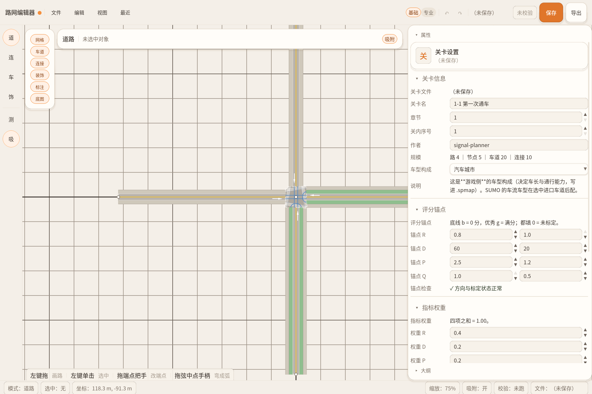
| # | 这块地方 | 干什么 |
|---|---|---|
| 1 | 顶栏 | 文件 / 编辑 / 视图 / 最近四个菜单；右边是撤销重做、文件名（* 表示没保存）、校验、保存、导出。右上角「基础 / 专业」是模式开关（第 8 章） |
| 2 | 左侧工具条 | 四个模式：道 / 连 / 车 / 饰，对应键盘 1 2 3 4。下面是测量 M 和格点吸附 X。亮着橙底的就是当前模式 |
| 3 | 画布 | 画路的地方。中键拖动平移、滚轮缩放 |
| 4 | 右侧面板 | 你选中什么，它就显示什么。这是用得最多的地方，改车道数、改配时、改流量都在这 |
| 5 | 底部两条 | 上面一条是当前模式的快捷键提示（会自动换），下面一条是状态栏：现在什么模式、选中了什么、鼠标坐标、缩放、有没有校验过 |
软件里随时按 F1，弹出一张完整键位表，顶部还有搜索框——输入「撤销」或「Ctrl」就能筛出对应的键。
后面各章会反复出现「按 G」「按 M」这种说法，不用背：忘了就按 F1。
不选东西 = 关卡设置；选路 = 路的参数；选路口 = 路口和配时；选车道 = 车流。选错了就在画布空白处点一下。
拖一下就成，右边的数字回头都能改。
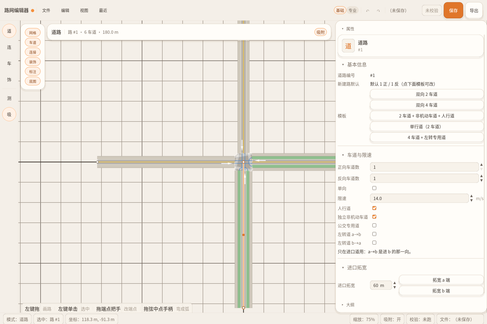
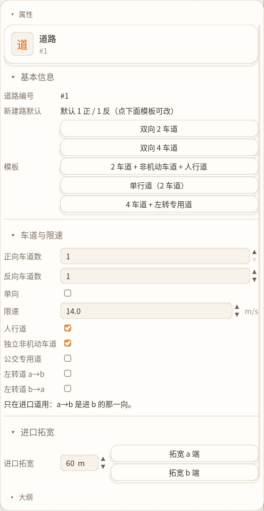
| 参数 | 怎么用 |
|---|---|
| 模板 | 五个现成的横断面，点一下就套上：双向 2 车道 / 双向 4 车道 / 2 车道+非机动车+人行道 / 单行道 / 4 车道+左转专用道。新手先用模板 |
| 正向 / 反向车道数 | 模板套完还想微调就改这里。1 条 = 单车道 |
| 单向 | 勾上就只保留正向（a→b）那一半 |
| 限速 | 单位 m/s。城市道路一般 14（≈50 km/h） |
| 人行道 / 独立非机动车道 | 勾上就多出这类车道。行人过街要用到人行道 |
| 公交专用道 / 左转道 a→b / b→a | 少见的特殊车道，新手暂时先不用管 |
| 进口拓宽 | 路口前多一条车道。填拓宽长度（比如 60 m），点「拓宽 a 端」或「b 端」 |
路口：两条或两条以上的道路的同一端点重合，即可形成路口，双击路口即可生成连接线。
弯路：选中路，按住路中心的实心橙色球，拖动即可变弯。
道路模式下双击路口。或者选中路口按 G，自动生成连接线。
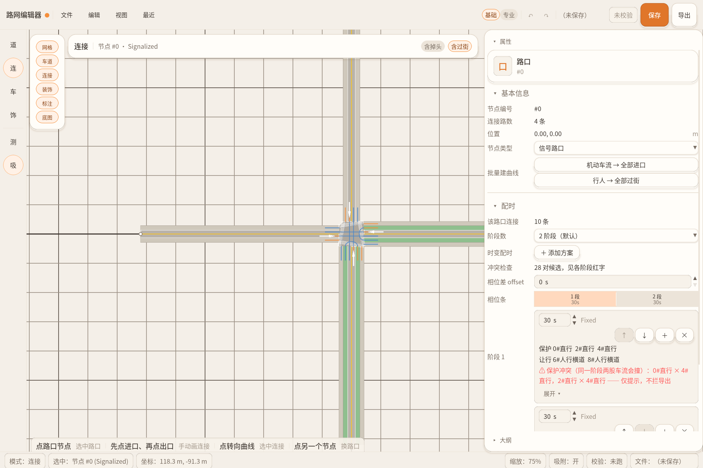
| 类型 | 什么时候用 |
|---|---|
| 普通路口 | 默认。没有信号灯，车自己看情况过 |
| 信号路口 | 有红绿灯。改成它以后才能配相位（第 5 章） |
| 起点 / 终点 | 只在路的两头「自由端」自动出现，表示车从这进来、从那出去。别手动改 |
这是正常的：车道重新生成后，旧转向对不上了，所以被清掉。回连接模式再按一次 G 就回来。
自动生成以后，点某条曲线可以删掉它；也可以完全手工画：先点进口车道、再点出口车道，就连出一条。
只需要想清楚三件事：几个阶段、每阶段放谁、每个阶段多久。
选中信号路口后，右侧面板下半部分就是配时区，强烈建议使用专业模式的信号配时，尽管会复杂一些，但是相比简化版更加直观，简化版更多是自动一次后就不动了。
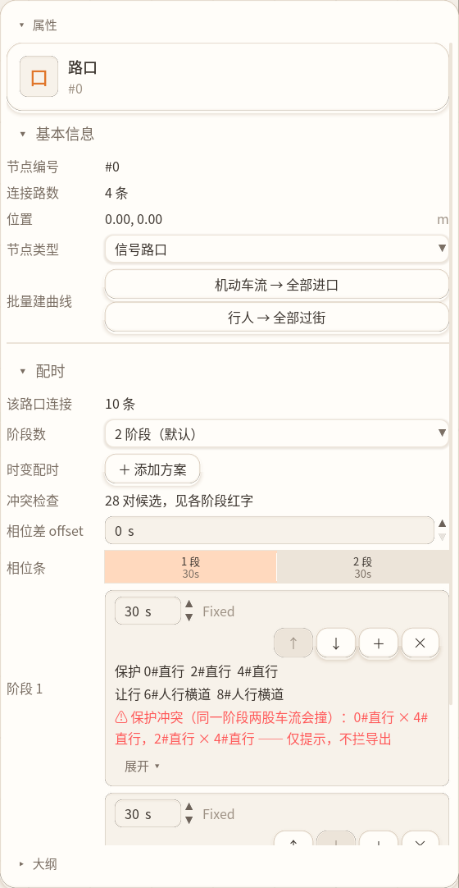
写着「保护冲突（同一阶段两股车流会撞）」的意思是这个阶段放行的两股车几何上会撞。 简单路口经常出现（尤其左转和对面直行同时放）。能导出、能跑，但游戏里会撞车、SUMO 里也算冲突。
要消掉：把其中一个转向挪到另一个阶段，或者把它的灯改成「让行」。
| 相位差 offset | 这条路比隔壁路口晚几秒开始。做绿波用，单个路口填 0 |
| 时变配时 / 添加方案 | 一天里不同时段用不同配时（早高峰 / 平峰）。简单关卡不用 |
| 批量建曲线 | 「机动车流 → 全部进口」一键给所有进口建需求（第 6 章要用） |
车从哪来、来多少 —— 挂在「进口车道」上。
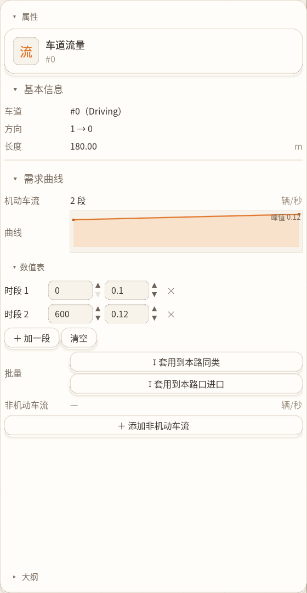
| 字段 | 怎么理解 |
|---|---|
| 时段 | 单位秒。0 → 600 表示「前 10 分钟」 |
| 流量 | 单位 辆/秒。0.1 就是每秒 0.1 辆（≈ 每分钟 6 辆） |
| 曲线 | 上面那张折线图只是把数字画出来给你看，不能直接拖 |
| 套用到本路同类 / 本路口进口 | 把当前这条的曲线复制给其它车道，省得一条条填 |
| 非机动车流 / 行人 | 同理，在这个区域下面另有一组 |
一条普通车道：0.1 ~ 0.2 辆/秒看着比较自然（360~720 辆/小时）。填 1.0 会堵成一条龙。
保存是存自己的；导出才是给别人（游戏 / SUMO）的。
| 动作 | 快捷键 | 说明 |
|---|---|---|
| 保存 | Ctrl+S | 存成 .spmap，这是编辑器的工程文件。文件名带 * 就是没存 |
| 自动保存 | — | 每 5 分钟往临时区存一份影子文件，不动你的正式文件。崩溃后重开会问你要不要恢复 |
| 校验 | 保存/导出时自动跑 | 顶栏显示「校验通过」或「N 处错误」。点它看清单 |
| 导出 | Ctrl+E | 转成游戏 / SUMO 要的格式 |
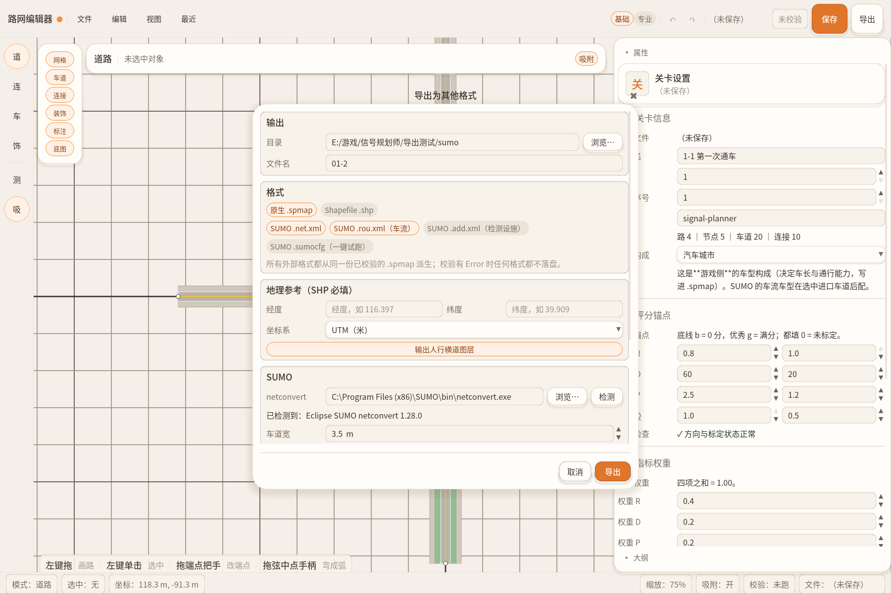
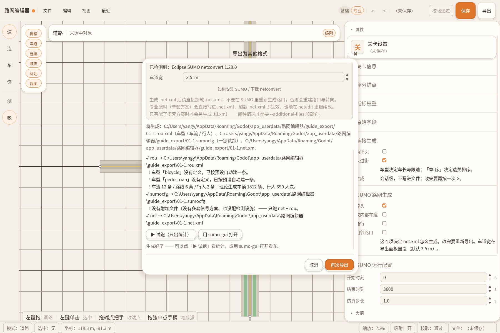
这是故意的：宁可存不下来，也不给你一个坏文件。错误会逐条列在窗口里，也会进「校验问题」清单。
只是「提示」（Warning）不拦导出，但最好看一眼。
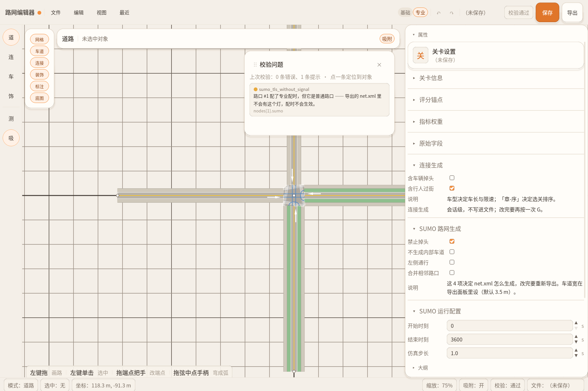
上图那条提示是示例：给「普通路口」也配了红绿灯配时，软件提醒你这套配时不会生效。
只想导出给游戏跑 → 到第 7 章就够了，这里不用看。
想让路网在 SUMO 里跑起来、看真实延误 → 从第 8 章开始。
右上角那个「基础 / 专业」开关，或 Ctrl+Shift+E。
切过去不会改你任何数据，只是面板上多出东西。多出来的分两类：
| 在哪 | 多了什么 |
|---|---|
| 关卡面板 不选任何东西时 | 「SUMO 路网生成」（4 个开关）和「SUMO 运行配置」（5 个数字） |
| 信号路口 | 逐灯位配时矩阵（第 9 章） |
| 进口车道 | 车型构成、检测设施、交通设施、公交线路、SUMO 车道属性 |
| 连接 | SUMO 连接属性（这条转向允不允许走车） |
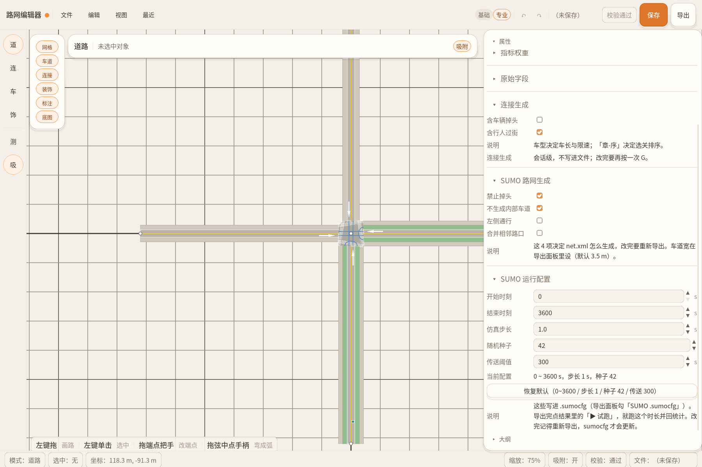
存在关卡旁边另一个文件里：你的关卡.sumo.json。.spmap 完全不动。
这两个文件要一起保存、一起拷走；删掉 .sumo.json 就等于回到基础模式。
专业模式的三块主力，都还是「选中什么编什么」。
选中信号路口 → 面板里滚到「信号灯配时」。这是一张行 = 转向、列 = 阶段的表格，点格子切换灯态。
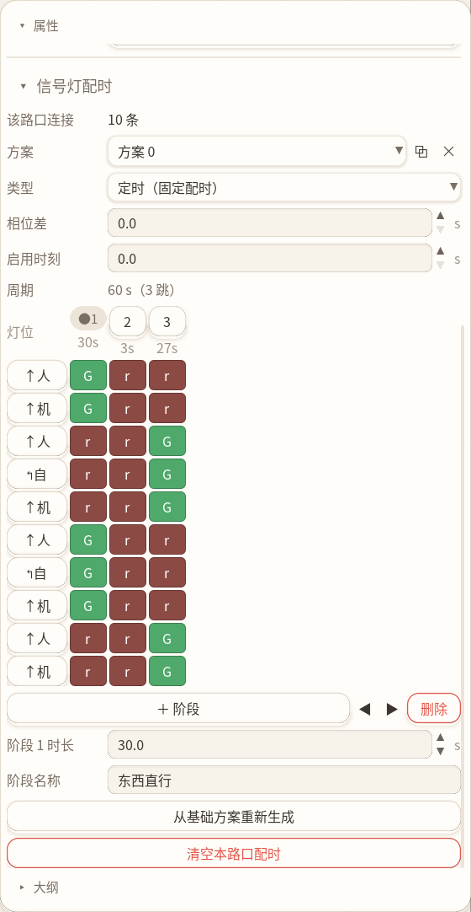
| 操作 | 结果 |
|---|---|
| 点格子 | 循环切换：绿 G → 绿 g → 黄 y → 红 r |
| 点列头上的数字 | 改这个阶段的时长（秒） |
| + 阶段 / 删除 | 加一个阶段 / 删掉当前阶段 |
| 方案下拉 | 一个路口可以有多套方案（比如平峰 / 高峰） |
| 从基础方案重新生成 | 重来一遍 |
选中进口车道 → 滚到「进口车型构成」。可以放多种车型、各自比例。
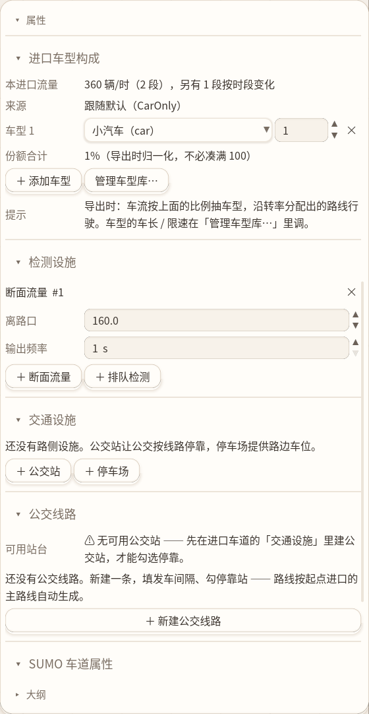
| 小节 | 干什么 |
|---|---|
| 进口车型构成 | 这个进口发哪几种车、各占多少。比例不必凑满 100，导出时会自动归一化 |
| 进口转率 | 进来的车往左 / 直 / 右各分多少 |
| 检测设施 | 在车道上放个「断面流量」或「排队检测」采集点（E1 / E2 检测器） |
| 交通设施 | 路边放公交站或停车场 |
| 公交线路 | 公交从哪个进口出发、几分钟一班、停哪几站 |
| SUMO 车道属性 | 这条车道只许公交走（公交专用道）、或者单独改限速 / 宽度 |
点「管理车型库…」能改每种车的车长、限速、加减速、涂装风格。车型库是全项目共用的，换关卡也不会丢。
「车型构成」只决定发什么车；发多少车是需求曲线（第 6 章）说了算。 只配了车型、没配需求 → 一辆车都不会出现。反过来配了需求、没配车型 → 用默认小汽车，也能跑。
跑完直接告诉你堵不堵、等多久。
不选任何东西 → 关卡面板滚到底 →「SUMO 运行配置」。
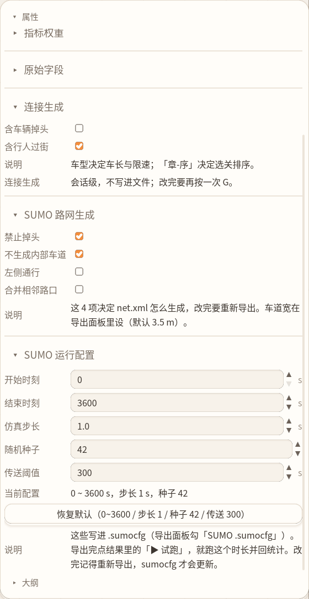
| 项 | 默认 / 说明 |
|---|---|
| 禁止掉头 | 建议开。开了 SUMO 不会在路口给你造掉头车道 |
| 不生成内部车道 | 路口内部不画那条「隐形车道」。灯位编号更稳，建议开 |
| 左侧通行 | 英国等国家是靠左形式的，国内仿真不用开 |
| 合并相邻路口 | 两个挨得很近的路口合成一个。会改变路口编号，已经配好的灯可能对不上，慎用。并且我阈值写的很小，几乎不会没有合并空间。 |
| 开始 / 结束时刻 | 跑多久（秒）。默认 0 ~ 3600，就是跑一小时 |
| 随机种子 | 同一个种子 = 每次跑出来一样，方便对比。改方案时别动它 |
这些数字是导出那一刻才写进 .sumocfg 的。面板上改完，必须再导出一次才生效。
导出时勾上「SUMO .sumocfg（一键试跑）」，导出成功后结果区下面会多两个按钮。
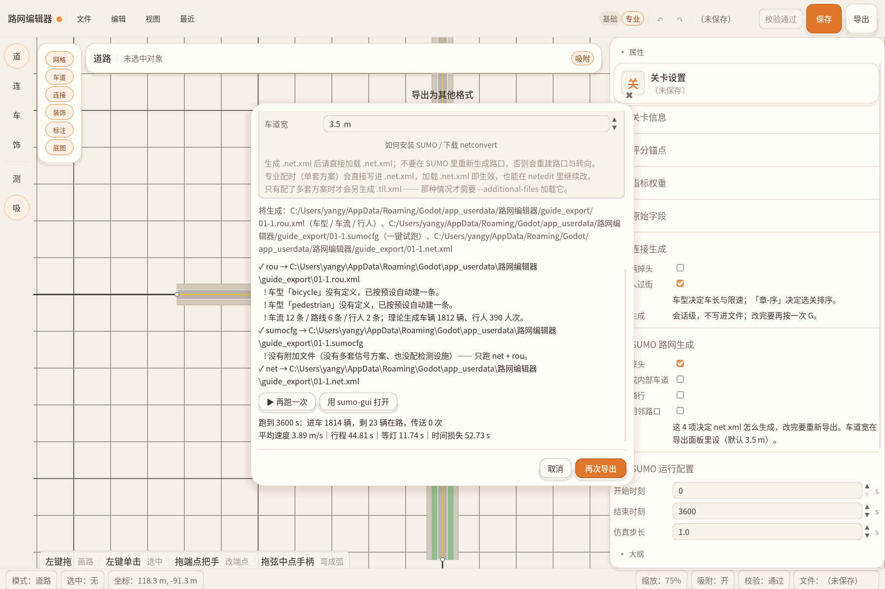
| 数字 | 怎么读 |
|---|---|
| 进车 N 辆 | 这段时间一共发出了多少车。是 0 就说明需求曲线或车流没配 |
| 剩 N 辆在路 | 结束时还没跑完的。特别多 = 路网堵住了 |
| 平均速度 | m/s。远低于限速就是堵 |
| 行程 / 等灯 / 时间损失 | 一辆车平均花多久、其中等红灯多久。越大配时越差 |
| 传送 N 次 | 堵太久被 SUMO 移走的车。大于 0 基本就是死锁或路线走不通 |
导出时会顺带跑 9 条检查，结果直接进「校验问题」清单（和基础版同一个窗口）。条目都以 sumo_ 开头。
| 提示 | 怎么修 |
|---|---|
| 某条连接从未放行 | 那个转向在所有阶段里都是红的。去矩阵给它一个绿灯 |
| 两条连接同时放行但互相冲突 | 拆到不同阶段 |
| 检测器位置超出车道 | 把「离路口」的数值改小 |
| 需求挂在出口车道 | 挪到进口车道 |
| 引用了不存在的车型 | 去车型库补，或改成已有车型 |
| 给非信号路口配了配时 | 把节点类型改成信号路口 |
错误（红）：导出前查出来的会拦掉全部 SUMO 文件（.spmap 和 SHP 照常生成）。
提示（黄）：文件照样生成，只是提醒你可能不是想要的效果。
给设计视角看：不打开软件，也知道一张关卡由哪些东西组成。
| 组成 | 是什么 | 在编辑器哪里配 |
|---|---|---|
| 路网 | 几条路、每条几车道、限速多少 | 道路模式 |
| 路口 | 哪里是路口、有没有红绿灯 | 连接模式 |
| 转向 | 每个路口允许哪些转向、各占多少比例 | 连接模式 G |
| 需求 | 各个进口每秒来多少车、多少行人 | 车辆模式 |
| 配时 | 每个信号路口几个阶段、各多久 | 连接模式选中路口 |
跑完一局，游戏会算四个数，再换算成分数：
| 代号 | 指标 | 意思 |
|---|---|---|
| R | 平均延误 | 每辆车平均多花了多少时间 |
| D | 最大排队 | 最长的队伍有多少辆 |
| P | 通行量 | 一段时间内过去了多少车 |
| Q | 排队时长 | 排队的车一共等了多久 |
锚点：每个指标要填两个数 —— 「底线 b」得 0 分、「优秀 g」得满分。中间按比例算。 四项分数再按权重加起来（默认 40/20/20/20），就是这一关的总分。
| 总分 | 星级 |
|---|---|
| ≥ 0.95 | ★★★ |
| ≥ 0.80 | ★★ |
| ≥ 0.60 | ★ |
| < 0.60 | 无星 |
| 发生碰撞 | 0 星（直接判失败） |
这些在编辑器里都能改：不选任何东西 → 关卡面板 →「评分锚点」「指标权重」。
关卡可以带「剧本」：第几秒发生什么事（比如某个路口信号坏了、来了救护车）， 以及开局给玩家的几句引导。这两项在关卡面板的「原始字段」里，是给游戏侧用的，编辑器只负责存。
软件里按 F1 随时能查（这里没有全放，建议直接开游戏里的）。
| 键 | 作用 |
|---|---|
| 1 2 3 4 | 切模式：道路 / 连接 / 车辆 / 装饰 |
| G | （连接模式）给选中路口自动生成全部转向 |
| M | 测量：拉一条线看多长 |
| X | 格点吸附开关 |
| Ctrl+Z / Ctrl+Y | 撤销 / 重做（能退 100 步） |
| Ctrl+S | 保存 |
| Ctrl+E | 导出为其它格式 |
| Ctrl+Shift+E | 切换基础 / 专业模式 |
| Delete | 删掉选中的路 / 路口 / 装饰 |
| F1 | 键位表（可搜索） |
| 滚轮 / 中键拖 | 缩放 / 平移画布 |
| 右键拖 | 框选多条路（框一小下 = 切换某条路的选中） |
按从常见到少见的顺序排。
| 现象 | 怎么办 |
|---|---|
| 双击 exe 打不开 / 一闪就没了 | 整个文件夹一起拷，别只拷 exe；别放桌面或改文件夹名 |
| 按 1~4 不切模式 | 焦点在输入框里。点一下画布空白再按 |
| 按 G 没反应 | 没选路口，或者当前不在连接模式 |
| 双击路口没变成红绿灯 | 那个点只连着一条路（是路的尽头）。再画一条路经过它 |
| 改完车道数，路口的转向全没了 | 正常。回连接模式再按一次 G |
| 导出时提示「N 条错误」 | 点顶栏的「N 处错误」看清单，点一条会跳到出错的对象 |
| 勾了 SUMO 格式却没生成文件 | 多半是体检拦下了。清单里看 sumo_ 开头的条目 |
| 试跑结果显示「进车 0 辆」 | 需求曲线没配，或者配在了出口车道上 |
| 试跑显示「传送 N 次」 | 路口死锁或路线走不通。检查配时有没有把所有车都堵死 |
| 装饰图片显示成红叉 | 素材文件被删了或改名了。放回 assets\deco\ 再在素材面板点「↻」 |
| 软件卡死 / 崩溃后重开 | 会弹窗问「要不要恢复上次」——选恢复就能拿回崩溃前的内容 |